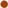

 Decebal. Associazione di amicizia italo-romena
Based in Trieste, Italy, the Association seeks to inform Italians about Romania and Romanian cultural events. The website has an extensive section dedicated to the IstroRomanian community. This is due in part to the proximity of the IstroRomanian villages in Istria but also because of the rather substantial IstroRomanian presence in Trieste.
Preservation of the Vlaški and Žejanski Language | Očuvęj vlåška ši žejånska limba
The Preservation of the Vlaški or Žejanski Language project was started in 2005 with the objective of documenting, describing and analyzing an endangered language for scientific purposes, and at the same time attending to the interests and goals of the community itself. In 2007, the project was extended to include Croatia, as well as New York.
Ethnobotanical knowledge of the Istro-Romanians of Žejane in Croatia
In indepth study of the folk pharmacopoeia, mainly plants, among the IstroRomanins of Žejane. The authors noted several rather uncommon traditional remedies used in the village. Available in .pdf format only.
Ethnologue: Istro-Romanian
This webpage makes a brief presentation of IstroRomanian, one of the minority languages of Croatia, giving an approximate number of speakers. This page is part of the Ethnologue: Languages of the World domain.
Istroromânii: Studiul dinamicii identității culturale și mediului | Istro-Romanians: Study of the Dynamics of Cultural Identity and the Environment
The study, conducted by a team from the "Francisc Rainer" Anthropological Institute of Romanian Academy of Sciences, proposes a interdisciplinary research of the relation between the cultural identity and environmental changes (be it natural, social, political or technological changes) in istro-romanian communities. The project also comes as an answer to both the urgency of the research of this culture and respectively the creation of a basis for strategies to maintain the identity of the Istro-Romanians. The project has thus two components: the first – fundamental research deals with the role played by memory in defining the cultural identity of Istro-Romanians; the second deals with the creation of a date bank which will include: an oral history archive, historical sources, memoirs, literature and images – concerning the culture and the environment of the Istro-Romanian community.
Osnovna škola "Ivan Goran Kovačić" Čepić
The Elementary School "Ivan Goran Kovačić" from Čepić has taken an active role in promoting and preserving the IstroRomanian language. You can access their curriculum dealing with the language and culture here.
Flags of the World: Mavrolachians (Morlaks, Mavrolakians)
In this page, part of the Flags of the World website, the authors look at the history of the Romanian speaking populations found through the Balkans in the Middle Ages and the surviving Aromanians and IstroRomanians. The flag presented has not be recorded in other sources and the presence of the star and crescent of the flag, raise questions as to the validity of such a flag being the symbol of the IstroRomanians or even the Morlaks (Black Vlachs) of Croatia.
GeoNative - Istro-Romanian
Part of the GeoNative Domain, this site gives the local names in Istro-Romanian for some of the villages in Istria, Croatia were Istro-Romanians live. You may also find in this page the local names in all the other languages spoken in the area: Croatian, Dalmatian, Italian and Istriot. This site is available in English and Basque.
IstriaNet.org
Istrianet.org is one of the most complete and complex webpages dedicated to Istria, Croatia. While there is a page dedicated specifically to the Istro-Romanian community, navigating throughout the website will find a few more sub-pages of the IstriaNet domain related to this community.
Istroromanian language
This page gives a general overview of the IstroRomanian Language, pointing to a possible connection between Dalmatian and IstroRomanian rather then Romanian. However, such a connection has been refuted by all linguist and lacks a linguistic or historical foundation. This webpage is provided by the Indo-European Database, a project seeking to provide information on the various Indo-European languages.
Istroromanian verbs
Focusing on the verb conjugation of the four Romanian dialects: Aromanian, Istro-Romanian, Daco-Romanian (Romanian proper), and Megleno-Romanian this page gives a glimpse into the language and distribution of Istro-Romanian.
Općina Kršan
The official tourism website of the Commune of Kršan with brief introductory pages for the IstroRomanian villages of Nova Vas, Jasenovik, Letaj, Brdo. The page for the village of Šušnjevica even mentions the presence of this community in the region. These pages are available in Croatian, Italian and German.
UNESCO Red Book of Endangered Languages: Istro-Romanian
The UNESCO Red Book of Endangered Languages lists Istro-Romanian as a "seriously endangered language," on the verge of extinction. This page gives a very brief situation of the language including number of speakers, distribution, and useful sources.
Zvončari
The custom of Zvončari, unique to the area where IstroRomanian is or was once spoken, bares some striking similarities to the Romanian customs of Călușari and Capra. The custom has become well known throughout Croatian, in part due to the annual Carnival in Rijeka, one of Europe's most popular. The Zvončari, or Bell Bearers, are known for their dances and impressive costumes. This page is available in Croatian and English.
Zvončari - Rukavac
Yet another page dedicated to the custom of Zvončari, this time from the village of Rukavac. Though not a village were IstroRomanian is spoken, Rukavac has preserved this costom well, which can be seen from the wonderful collection of pictures and the nice presentation of the custom and of the village included here. This page is available in both Croatian and English.
Wikipedia: IstroRomanian
Wikipedia is a web-based, multi-language, free-content encyclopedia written collaboratively by volunteers and sponsored by the non-profit Wikimedia Foundation. Its purpose is to create and distribute a free international encyclopedia in as many languages as possible. The website is also avialable in Romanian, Croatian, German and Polish.